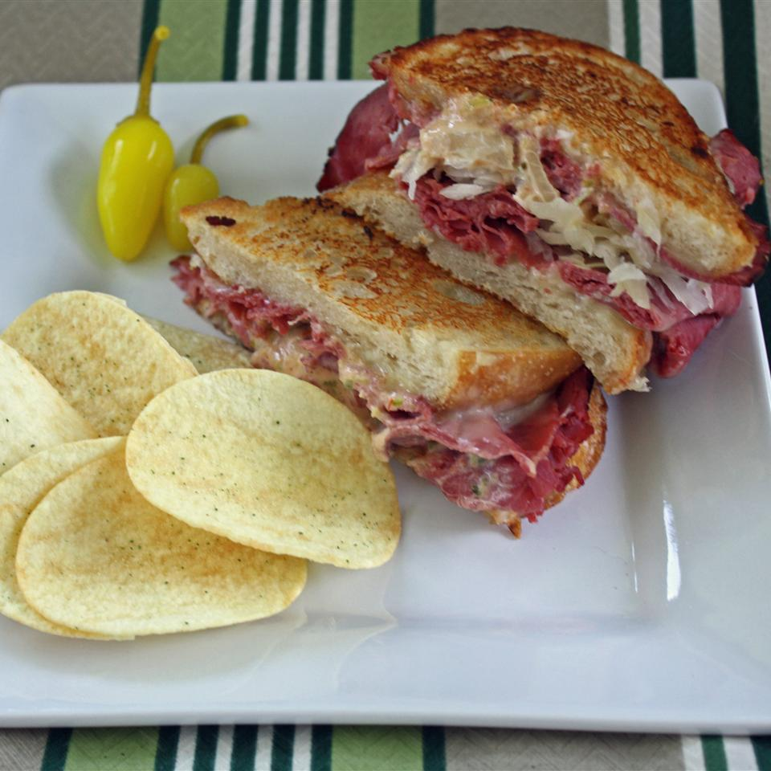

Grilled Reuben Sandwich

Grilled Reuben Sandwich
Classic Reuben sandwich finshed off on a grill to add flavor and texture.
Ingredients
- 1 tablespoons of butter
- 2 slices of rye bread
- 2 slices of deli sliced corn beef
- 2 slices of Swiss cheese
- 1/4 cup of saurkraut, drained
- 1/4 cup Thousand Island dressing
Steps
- Preheat a large skillet or griddle on Medium heat.
- Lightly butter one side of the bread.
- Spread the non-buttered side with Thousand Island dressing.
- Layer 1 slice Swiss cheese, 2 slices of corned beef, sauerkraut.
- Top with second slice of Swiss, and remaining bread slice, buttered side out.
- Grill sandwich until both sides are golden brown, about 5 minutes per side.
- Serve hot.